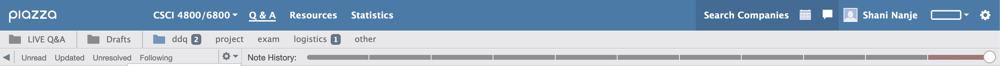

Low Fidelity Wireframes and User Story Introductions
User Story A) As a regular user, I want to filter posts in order to find important information related to deadlines and assignment instructions.
Being able to filter posts gives students easier access to important information. Allowing students to more easily filter for deadlines, instructions, and post type could increase their grades/productivity by making assignments more straightforward. If, for example, a student is looking specifically for announcements from their professor to make sure they haven’t missed anything important, an announcements tag which could be filtered for, would be incredibly useful. If a student wants to see all of their upcoming deadlines, being able to filter for deadlines and see them ordered by date would allow them to organize their schedule and stay on top of their assignments. Being able to do all of these things could help students be more organized and productive overall. It would also increase the usefulness of Piazza as an educational platform.
User Story B) As a member of a group, I want to collaboratively work and edit a piazza post with other members of the group at the same time
Allowing students to collaborate on posts would allow for more options concerning group work and would increase productivity. Students would be able to ask questions as a group for better clarification on assignments. Allowing for easier group work would give professors the ability to assign different types of projects and better utilize Piazza. Classes that are group-project focused will have more flexibility with the platform. For example, if a group needs to post an assignment instead of only one member being able to post it and then only that same member having access to edit the post, any member of the group could edit the post. This creates greater flexibility for the students and would encourage collaboration. This will help students by giving them an easier way to complete their work and ask questions.
User Story C) As a regular user, I want to understand Piazza's layout so that I can navigate the site efficiently.
Piazza’s layout can be overwhelming for users, especially because the same icons are used in different places,
and you can do the same thing in different places. For example;

Piazza has the setting wheel icon in two different places and these are used differently. It makes sense to have
this icon in the top corner because it pertains to user account settings and such while the bottom left is using
it as a filter. A different icon can be used for the bottom left. Another example regarding the bottom left setting:
The same filters can be accessed in two different places which is unnecessary and confusing for users.
When opening a class forum, being able to navigate to important posts and the ones that user posted and would
like to see the replies too is hard to do when every piece of information is given. So making users posts above
the other posts would be ideal, as well as creating a “see more” option if a user wants to view other posts.
Overall making Piazza easier to navigate will decrease stress for students and improve communication between
students and professors.
User Story D) As a visually impaired user I want to be able to read the information posted on Piazza for the same things as any other student so that I have the same options and access to information as everyone else.
User Story E) As a student I want to reply to a classmate's post and see replies to a post that I made on the class website forum. I want to do this because a majority of my class grade depends on retrieving information from Piazza.
User Story F) As an instructor at times I want to make a large post containing some text and if my internet or something goes out if I do not specifically save it as a draft I will lose my work, so I prefer writing it in other places and pasting it on piazza.
High Fidelity Wireframes and User Story Specifications
User Story A)
As a regular user, I want to filter posts in order to find important information related to deadlines and assignment instructions.
- a) Create a filter option for upcoming deadlines
- b) Create a filter option for assignments vs announcements vs student questions
- c) Add tags to posts to organize them
- d) Add deadlines to posts tagged as assignments
This wireframe design was created because filters and tags that are easier to see can help students find the information that they are looking for and stay organized. Creating easily visible tags to better organize posts gives students an easier way to locate important information. These tags can then be used to filter for posts. Students can filter by specifics such as deadlines, questions, and instructor posts. The tags being visible and color coded helps to make the interface easier to navigate and allows for quicker use of Piazza when searching for information.
User Story B)
As a member of a group, I want to collaboratively work and edit a piazza post with other members of the group at the same time
- a) A group member can create a new post and invite those who then have the ability to edit
- b) Autosaves posts to drafts to work on later
This wireframe design decision was made because a collaborative workspace helps with efficiency and productivity. In a group it takes much longer for a single person to write down everything while everyone else is suggesting their ideas and many times ideas can be misinterpreted. This design idea works the best, because it allows for the initial user to press on the invite button. Then they can add and assign roles to the invited users. It will allow for only the invited users to view the workspace and make changes. This design change will help so the responsibility is not put on one person to write up the post, but will give everyone the ability to take a part in the assignment.
User Story C)
As a regular user, I want to understand Piazza’s layout so that I can navigate the site efficiently and interact with others' posts.
- a) Create buttons and icons with obvious affordances
- b) Have a tutorial on how to use various features
- c) Show an account users post at the top of the forum underneath the topic pinned, and have a “see more” option instead of having all information shown at once.
This wireframe design serves the purpose of allowing for a more interactive UI in which users can immediately see replies and feedback from their own posts which are a part of the forum itself. Users would want to see what type of feedback they get instead of having to scroll to find where their post was created. And instead of throwing all posts directly into a user's line of sight, the see more option allows for a user to have the option of reading more posts if they feel like doing so without the feeling of being overwhelmed. Another feature we added was the upvote and downvote on a post, this way users can directly interact without having to write up a post.